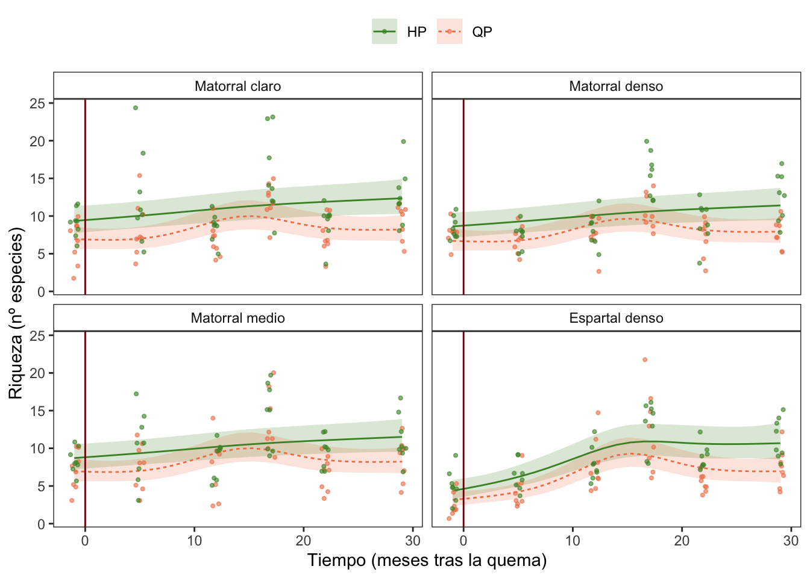
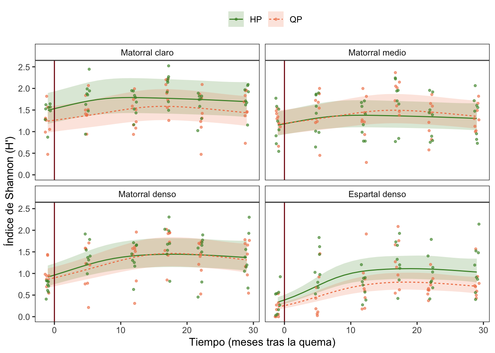
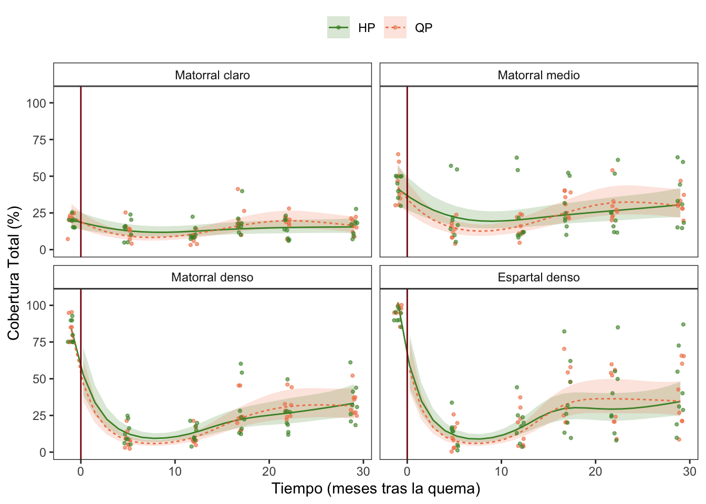
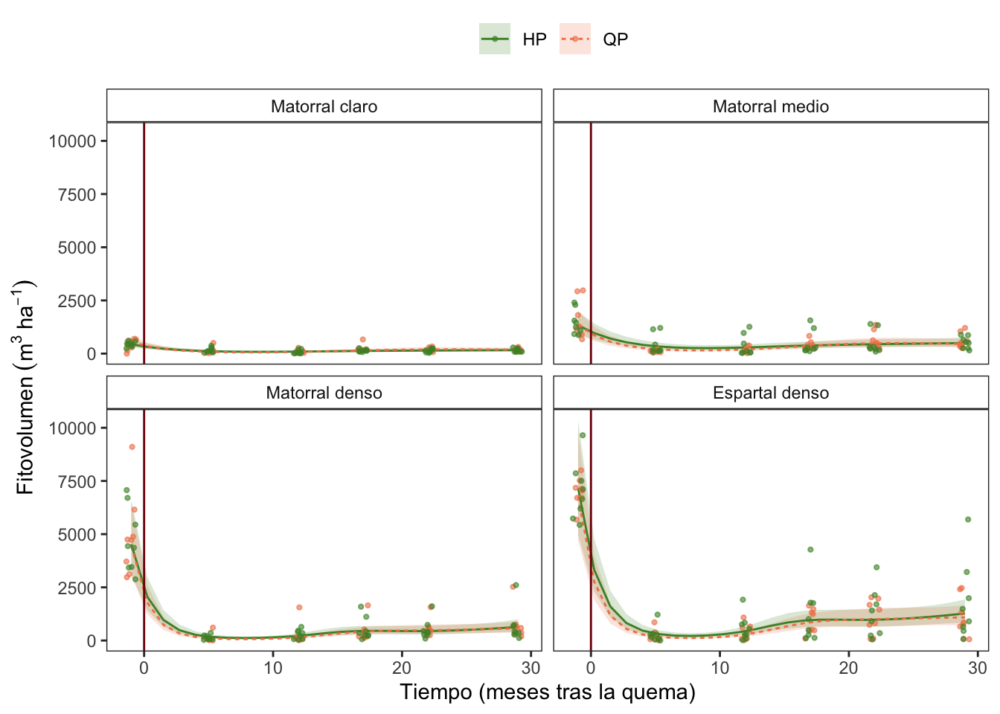

Temporal evolution of veg. parameters by rangos (Spanish)
Antonio J. Pérez-Luque
2022-01-17
Last updated: 2022-01-21
Checks: 7 0
Knit directory: veg_alcontar/
This reproducible R Markdown analysis was created with workflowr (version 1.7.0). The Checks tab describes the reproducibility checks that were applied when the results were created. The Past versions tab lists the development history.
Great! Since the R Markdown file has been committed to the Git repository, you know the exact version of the code that produced these results.
Great job! The global environment was empty. Objects defined in the global environment can affect the analysis in your R Markdown file in unknown ways. For reproduciblity it’s best to always run the code in an empty environment.
The command set.seed(20211007) was run prior to running the code in the R Markdown file. Setting a seed ensures that any results that rely on randomness, e.g. subsampling or permutations, are reproducible.
Great job! Recording the operating system, R version, and package versions is critical for reproducibility.
Nice! There were no cached chunks for this analysis, so you can be confident that you successfully produced the results during this run.
Great job! Using relative paths to the files within your workflowr project makes it easier to run your code on other machines.
Great! You are using Git for version control. Tracking code development and connecting the code version to the results is critical for reproducibility.
The results in this page were generated with repository version b065d98. See the Past versions tab to see a history of the changes made to the R Markdown and HTML files.
Note that you need to be careful to ensure that all relevant files for the analysis have been committed to Git prior to generating the results (you can use wflow_publish or wflow_git_commit). workflowr only checks the R Markdown file, but you know if there are other scripts or data files that it depends on. Below is the status of the Git repository when the results were generated:
Ignored files:
Ignored: .Rhistory
Ignored: .Rproj.user/
Untracked files:
Untracked: analysis/temporal_all_EPs.Rmd
Untracked: output/congreso_forestal/tabla_post_hoc.xls
Unstaged changes:
Modified: analysis/temporal_analysis.Rmd
Note that any generated files, e.g. HTML, png, CSS, etc., are not included in this status report because it is ok for generated content to have uncommitted changes.
These are the previous versions of the repository in which changes were made to the R Markdown (analysis/temporal_analysis_rangos.Rmd) and HTML (docs/temporal_analysis_rangos.html) files. If you’ve configured a remote Git repository (see ?wflow_git_remote), click on the hyperlinks in the table below to view the files as they were in that past version.
| File | Version | Author | Date | Message |
|---|---|---|---|---|
| Rmd | b065d98 | ajpelu | 2022-01-21 | add posthoc |
| html | fce7f28 | ajpelu | 2022-01-18 | Build site. |
| Rmd | f659446 | ajpelu | 2022-01-18 | update figures |
| html | ed2171c | ajpelu | 2022-01-18 | Build site. |
| Rmd | fd05b4a | ajpelu | 2022-01-18 | improve tables and figures |
| Rmd | e845f96 | ajpelu | 2022-01-17 | update analysis |
| html | e845f96 | ajpelu | 2022-01-17 | update analysis |
Introdución y Objetivos
Analizar la evolución de los parámetros de vegetación a lo largo del tiempo, entre dos tratamientos: Herbivorísmo pírico (HP) y Quemas Prescritas (QP), considerando los diferentes rangos
Usamos solamente datos de la quema de Otoño
Diseño:
- tratamiento: HP y QP
- rangos
- 6 fechas de muestreo
- 32 plots por tratamiento
rango
treat Matorral claro Matorral medio Matorral denso Espartal denso
HP 48 48 48 48
QP 48 48 48 48Análisis estadístico
- Se utilizaron Modelos Mixtos Aditivos Generalizados (GAMM) para evaluar los efectos del tratamiento (Quemas Prescritos vs. Herbivorismo Pírico) sobre la evolución de la cobertura vegetal, el fitovolumen y los índices de diversidad (Shannon, Riqueza).
Riqueza
Modelo
f <- as.formula(
riq ~
s(meses, by = interaction(treat, rango), k = 5, bs = "cs") +
s(meses, by = treat, k = 5, bs = "cs") +
s(meses, by = rango, k = 5, bs = "cs") +
treat * rango
)
fi <- as.formula(
riq ~
s(meses, by = interaction(treat, rango), k = 5, bs = "cs") +
treat * rango
)
fni <- as.formula(
riq ~
s(meses, by = treat, k = 5, bs = "cs") +
s(meses, by = rango, k = 5, bs = "cs") +
treat * rango
)
mfull <- gamm(f,
random = list(quadrat = ~1),
data = veg,
family = poisson,
method = "ML")
Maximum number of PQL iterations: 20 mi <- gamm(fi,
random = list(quadrat = ~1),
data = veg,
family = poisson,
method = "ML")
Maximum number of PQL iterations: 20 mni <- gamm(fni,
random = list(quadrat = ~1),
data = veg,
family = poisson,
method = "ML")
Maximum number of PQL iterations: 20 - Seleccionamos los suavizados, y elegimos el modelo con menor AIC
| model | df | AIC |
|---|---|---|
| mni | 15 | 319.8728 |
| mfull | 23 | 334.4628 |
| mi | 17 | 336.0228 |
# Distribution of Model Family
Predicted Distribution of Residuals
Distribution Probability
normal 66%
tweedie 34%
Predicted Distribution of Response
Distribution Probability
beta-binomial 59%
negative binomial 12%
neg. binomial (zero-infl.) 9%Model validation

| A. parametric coefficients | Estimate | Std. Error | t-value | p-value |
| (Intercept) | 2.3946 | 0.0854 | 28.0294 | < 0.0001 |
| treatQP | -0.2895 | 0.1234 | -2.3454 | 0.0195 |
| rangoMatorral medio | -0.0714 | 0.1214 | -0.5883 | 0.5567 |
| rangoMatorral denso | -0.0806 | 0.1214 | -0.6637 | 0.5073 |
| rangoEspartal denso | -0.2813 | 0.1236 | -2.2766 | 0.0234 |
| treatQP:rangoMatorral medio | 0.0729 | 0.1749 | 0.4169 | 0.6770 |
| treatQP:rangoMatorral denso | 0.0457 | 0.1752 | 0.2607 | 0.7945 |
| treatQP:rangoEspartal denso | -0.0214 | 0.1781 | -0.1201 | 0.9045 |
| B. smooth terms | edf | Ref.df | F-value | p-value |
| s(meses):treatHP | 1.6005 | 4.0000 | 4.1012 | 0.0001 |
| s(meses):treatQP | 3.4564 | 4.0000 | 6.4054 | < 0.0001 |
| s(meses):rangoMatorral claro | 0.0000 | 4.0000 | 0.0000 | 0.9918 |
| s(meses):rangoMatorral medio | 0.0000 | 4.0000 | 0.0000 | 0.7363 |
| s(meses):rangoMatorral denso | 0.0000 | 4.0000 | 0.0000 | 0.5012 |
| s(meses):rangoEspartal denso | 2.7565 | 4.0000 | 7.5048 | < 0.0001 |

Diversidad
Modelo
f <- as.formula(
shan ~
s(meses, by = interaction(treat, rango), k = 5, bs = "cs") +
s(meses, by = treat, k = 5, bs = "cs") +
s(meses, by = rango, k = 5, bs = "cs") +
treat * rango
)
fi <- as.formula(
shan ~
s(meses, by = interaction(treat, rango), k = 5, bs = "cs") +
treat * rango
)
fni <- as.formula(
shan ~
s(meses, by = treat, k = 5, bs = "cs") +
s(meses, by = rango, k = 5, bs = "cs") +
treat * rango
)
mfull <- gamm(f,
random = list(quadrat = ~1),
data = veg,
family = tw,
method = "ML")
Maximum number of PQL iterations: 20 mi <- gamm(fi,
random = list(quadrat = ~1),
data = veg,
family = tw,
method = "ML")
Maximum number of PQL iterations: 20 mni <- gamm(fni,
random = list(quadrat = ~1),
data = veg,
family = tw,
method = "ML")
Maximum number of PQL iterations: 20 - Seleccionamos los suavizados, y elegimos el modelo con menor AIC
| model | df | AIC |
|---|---|---|
| mni | 16 | 312.3255 |
| mi | 18 | 326.0420 |
| mfull | 24 | 329.8898 |
# Distribution of Model Family
Predicted Distribution of Residuals
Distribution Probability
normal 62%
tweedie 19%
beta 12%
Predicted Distribution of Response
Distribution Probability
tweedie 47%
weibull 25%
beta 12%Model validation

| A. parametric coefficients | Estimate | Std. Error | t-value | p-value |
| (Intercept) | 0.5287 | 0.1110 | 4.7639 | < 0.0001 |
| treatQP | -0.1583 | 0.1573 | -1.0059 | 0.3151 |
| rangoMatorral medio | -0.2605 | 0.1576 | -1.6529 | 0.0992 |
| rangoMatorral denso | -0.2817 | 0.1576 | -1.7872 | 0.0747 |
| rangoEspartal denso | -0.7181 | 0.1590 | -4.5167 | < 0.0001 |
| treatQP:rangoMatorral medio | 0.2017 | 0.2231 | 0.9042 | 0.3665 |
| treatQP:rangoMatorral denso | 0.1236 | 0.2233 | 0.5535 | 0.5803 |
| treatQP:rangoEspartal denso | -0.2180 | 0.2258 | -0.9652 | 0.3351 |
| B. smooth terms | edf | Ref.df | F-value | p-value |
| s(meses):treatHP | 2.3165 | 4.0000 | 2.1678 | 0.0131 |
| s(meses):treatQP | 2.2922 | 4.0000 | 3.6264 | 0.0006 |
| s(meses):rangoMatorral claro | 0.0000 | 4.0000 | 0.0000 | 0.5747 |
| s(meses):rangoMatorral medio | 0.0000 | 4.0000 | 0.0000 | 0.5277 |
| s(meses):rangoMatorral denso | 1.8420 | 4.0000 | 2.6999 | 0.0022 |
| s(meses):rangoEspartal denso | 3.0818 | 4.0000 | 20.0725 | < 0.0001 |
Post-hoc
Wald test
-----
mod_full: shan ~ s(meses, by = treat, k = 5, bs = "cs") + s(meses, by = rango,
k = 5, bs = "cs") + treat * rango
Parametric effects:
(Intercept) treatQP
1.72097226 -0.22864459
rangoMatorral medio rangoMatorral denso
-0.35503370 -0.38829596
rangoEspartal denso treatQP:rangoMatorral medio
-0.78153985 0.27022479
treatQP:rangoMatorral denso treatQP:rangoEspartal denso
0.20484514 -0.02517138
Null hypothesis = 0
Comparing HP.Matorral claro with QP.Espartal denso:
X2(1.000) = 139.048, p < 2e-16 ***
Comparing QP.Matorral claro with QP.Espartal denso:
X2(1.000) = 84.416, p < 2e-16 ***
Comparing HP.Matorral claro with HP.Espartal denso:
X2(1.000) = 79.230, p < 2e-16 ***
Comparing QP.Matorral medio with QP.Espartal denso:
X2(1.000) = 67.599, p = 2.00e-16 ***
Comparing HP.Matorral medio with QP.Espartal denso:
X2(1.000) = 60.036, p = 9.31e-15 ***
Comparing HP.Matorral denso with QP.Espartal denso:
X2(1.000) = 54.309, p = 1.71e-13 ***
Comparing QP.Matorral denso with QP.Espartal denso:
X2(1.000) = 50.388, p = 1.26e-12 ***
Comparing QP.Matorral claro with HP.Espartal denso:
X2(1.000) = 39.653, p = 3.03e-10 ***
Comparing QP.Matorral medio with HP.Espartal denso:
X2(1.000) = 28.421, p = 9.76e-08 ***
Comparing HP.Matorral medio with HP.Espartal denso:
X2(1.000) = 23.596, p = 1.19e-06 ***
Comparing HP.Matorral claro with QP.Matorral denso:
X2(1.000) = 22.028, p = 2.69e-06 ***
Comparing HP.Matorral denso with HP.Espartal denso:
X2(1.000) = 20.059, p = 7.51e-06 ***
Comparing HP.Matorral claro with HP.Matorral denso:
X2(1.000) = 19.557, p = 9.76e-06 ***
Comparing QP.Matorral denso with HP.Espartal denso:
X2(1.000) = 17.705, p = 2.58e-05 ***
Comparing HP.Matorral claro with HP.Matorral medio:
X2(1.000) = 16.350, p = 5.26e-05 ***
Comparing HP.Matorral claro with QP.Matorral medio:
X2(1.000) = 12.745, p = 3.57e-04 ***
Comparing HP.Espartal denso with QP.Espartal denso:
X2(1.000) = 8.356, p = 0.004 **
Comparing HP.Matorral claro with QP.Matorral claro:
X2(1.000) = 6.781, p = 0.009 **
Comparing QP.Matorral claro with QP.Matorral denso:
X2(1.000) = 4.365, p = 0.037 *
Comparing QP.Matorral claro with HP.Matorral denso:
X2(1.000) = 3.306, p = 0.069 .
Comparing QP.Matorral claro with HP.Matorral medio:
X2(1.000) = 2.072, p = 0.150
Comparing QP.Matorral medio with QP.Matorral denso:
X2(1.000) = 1.262, p = 0.261
Comparing QP.Matorral claro with QP.Matorral medio:
X2(1.000) = 0.933, p = 0.334
Comparing QP.Matorral medio with HP.Matorral denso:
X2(1.000) = 0.727, p = 0.394
Comparing HP.Matorral medio with QP.Matorral denso:
X2(1.000) = 0.422, p = 0.516
Comparing HP.Matorral medio with HP.Matorral denso:
X2(1.000) = 0.144, p = 0.705
Comparing HP.Matorral denso with QP.Matorral denso:
X2(1.000) = 0.073, p = 0.786
Comparing HP.Matorral medio with QP.Matorral medio:
X2(1.000) = 0.224, p = 0.636
Wald test
-----
mod_rangos: shan ~ s(meses, by = treat, k = 5, bs = "cs") + s(meses, by = rango,
k = 5, bs = "cs") + rango
Parametric effects:
(Intercept) rangoMatorral medio rangoMatorral denso rangoEspartal denso
1.6066500 -0.2199213 -0.2858734 -0.7941255
Null hypothesis = 0
Comparing Matorral claro with Espartal denso:
X2(1.000) = 158.705, p < 2e-16 ***
Comparing Matorral medio with Espartal denso:
X2(1.000) = 82.974, p < 2e-16 ***
Comparing Matorral denso with Espartal denso:
X2(1.000) = 65.008, p = 7.46e-16 ***
Comparing Matorral claro with Matorral denso:
X2(1.000) = 20.566, p = 5.76e-06 ***
Comparing Matorral claro with Matorral medio:
X2(1.000) = 12.172, p = 4.85e-04 ***
Comparing Matorral medio with Matorral denso:
X2(1.000) = 1.095, p = 0.295 Plot

Cobertura
Modelo
f <- as.formula(
cob ~
s(meses, by = interaction(treat, rango), k = 5, bs = "cs") +
s(meses, by = treat, k = 5, bs = "cs") +
s(meses, by = rango, k = 5, bs = "cs") +
treat * rango
)
fi <- as.formula(
cob ~
s(meses, by = interaction(treat, rango), k = 5, bs = "cs") +
treat * rango
)
fni <- as.formula(
cob ~
s(meses, by = treat, k = 5, bs = "cs") +
s(meses, by = rango, k = 5, bs = "cs") +
treat * rango
)
mfull <- gamm(f,
random = list(quadrat = ~1),
data = veg,
family = nb,
method = "ML")
Maximum number of PQL iterations: 20 mi <- gamm(fi,
random = list(quadrat = ~1),
data = veg,
family = nb,
method = "ML")
Maximum number of PQL iterations: 20 mni <- gamm(fni,
random = list(quadrat = ~1),
data = veg,
family = nb,
method = "ML")
Maximum number of PQL iterations: 20 - Seleccionamos los suavizados, y elegimos el modelo con menor AIC
| model | df | AIC |
|---|---|---|
| mni | 16 | 553.3551 |
| mfull | 24 | 569.3552 |
| mi | 18 | 604.5710 |
# Distribution of Model Family
Predicted Distribution of Residuals
Distribution Probability
normal 69%
tweedie 28%
beta 3%
Predicted Distribution of Response
Distribution Probability
neg. binomial (zero-infl.) 91%
beta-binomial 9%Model validation
| A. parametric coefficients | Estimate | Std. Error | t-value | p-value |
| (Intercept) | 2.6987 | 0.1387 | 19.4558 | < 0.0001 |
| treatQP | 0.0166 | 0.1962 | 0.0846 | 0.9326 |
| rangoMatorral medio | 0.5852 | 0.1960 | 2.9861 | 0.0030 |
| rangoMatorral denso | 0.5418 | 0.1960 | 2.7644 | 0.0060 |
| rangoEspartal denso | 0.6656 | 0.1960 | 3.3959 | 0.0008 |
| treatQP:rangoMatorral medio | -0.0813 | 0.2772 | -0.2934 | 0.7694 |
| treatQP:rangoMatorral denso | -0.1166 | 0.2773 | -0.4206 | 0.6743 |
| treatQP:rangoEspartal denso | -0.0529 | 0.2772 | -0.1909 | 0.8487 |
| B. smooth terms | edf | Ref.df | F-value | p-value |
| s(meses):treatHP | 3.2434 | 4.0000 | 5.4764 | < 0.0001 |
| s(meses):treatQP | 3.7914 | 4.0000 | 21.8033 | < 0.0001 |
| s(meses):rangoMatorral claro | 0.0000 | 4.0000 | 0.0000 | 0.1724 |
| s(meses):rangoMatorral medio | 1.9142 | 4.0000 | 1.1067 | 0.0882 |
| s(meses):rangoMatorral denso | 3.8000 | 4.0000 | 25.9436 | < 0.0001 |
| s(meses):rangoEspartal denso | 3.8968 | 4.0000 | 33.2093 | < 0.0001 |
Post-hoc
Wald test
-----
mod_full: cob ~ s(meses, by = treat, k = 5, bs = "cs") + s(meses, by = rango,
k = 5, bs = "cs") + treat * rango
Parametric effects:
(Intercept) treatQP
15.2916667 0.8958333
rangoMatorral medio rangoMatorral denso
15.3125000 17.2708333
rangoEspartal denso treatQP:rangoMatorral medio
25.0833333 -3.8541667
treatQP:rangoMatorral denso treatQP:rangoEspartal denso
-1.1875000 -1.2916667
Null hypothesis = 0
Comparing HP.Matorral medio with QP.Matorral medio:
X2(1.000) = 1.313, p = 0.252
Comparing HP.Espartal denso with QP.Espartal denso:
X2(1.000) = 0.024, p = 0.878
Comparing HP.Matorral denso with QP.Matorral denso:
X2(1.000) = 0.013, p = 0.910
Comparing HP.Matorral claro with QP.Matorral claro:
X2(1.000) = 0.120, p = 0.729
Comparing HP.Matorral medio with QP.Matorral denso:
X2(1.000) = 0.417, p = 0.519
Comparing HP.Matorral medio with HP.Matorral denso:
X2(1.000) = 0.575, p = 0.448
Comparing QP.Matorral medio with QP.Matorral denso:
X2(1.000) = 3.208, p = 0.073 .
Comparing QP.Matorral medio with HP.Matorral denso:
X2(1.000) = 3.626, p = 0.057 .
Comparing HP.Matorral denso with QP.Espartal denso:
X2(1.000) = 8.251, p = 0.004 **
Comparing QP.Matorral denso with QP.Espartal denso:
X2(1.000) = 8.912, p = 0.003 **
Comparing HP.Matorral denso with HP.Espartal denso:
X2(1.000) = 9.155, p = 0.002 **
Comparing QP.Matorral denso with HP.Espartal denso:
X2(1.000) = 9.851, p = 0.002 **
Comparing HP.Matorral medio with QP.Espartal denso:
X2(1.000) = 13.183, p = 2.83e-04 ***
Comparing HP.Matorral medio with HP.Espartal denso:
X2(1.000) = 14.320, p = 1.54e-04 ***
Comparing QP.Matorral claro with QP.Matorral medio:
X2(1.000) = 19.693, p = 9.09e-06 ***
Comparing QP.Matorral medio with QP.Espartal denso:
X2(1.000) = 22.816, p = 1.78e-06 ***
Comparing HP.Matorral claro with QP.Matorral medio:
X2(1.000) = 22.893, p = 1.71e-06 ***
Comparing QP.Matorral medio with HP.Espartal denso:
X2(1.000) = 24.304, p = 8.23e-07 ***
Comparing QP.Matorral claro with HP.Matorral medio:
X2(1.000) = 31.175, p = 2.36e-08 ***
Comparing HP.Matorral claro with HP.Matorral medio:
X2(1.000) = 35.169, p = 3.02e-09 ***
Comparing QP.Matorral claro with QP.Matorral denso:
X2(1.000) = 38.799, p = 4.70e-10 ***
Comparing QP.Matorral claro with HP.Matorral denso:
X2(1.000) = 40.219, p = 2.27e-10 ***
Comparing HP.Matorral claro with QP.Matorral denso:
X2(1.000) = 43.242, p = 4.84e-11 ***
Comparing HP.Matorral claro with HP.Matorral denso:
X2(1.000) = 44.740, p = 2.25e-11 ***
Comparing QP.Matorral claro with QP.Espartal denso:
X2(1.000) = 84.902, p < 2e-16 ***
Comparing QP.Matorral claro with HP.Espartal denso:
X2(1.000) = 87.751, p < 2e-16 ***
Comparing HP.Matorral claro with QP.Espartal denso:
X2(1.000) = 91.417, p < 2e-16 ***
Comparing HP.Matorral claro with HP.Espartal denso:
X2(1.000) = 94.372, p < 2e-16 ***
Wald test
-----
mod_rangos: cob ~ s(meses, by = treat, k = 5, bs = "cs") + s(meses, by = rango,
k = 5, bs = "cs") + rango
Parametric effects:
(Intercept) rangoMatorral medio rangoMatorral denso rangoEspartal denso
15.73958 13.38542 16.67708 24.43750
Null hypothesis = 0
Comparing Matorral medio with Matorral denso:
X2(1.000) = 3.186, p = 0.074 .
Comparing Matorral denso with Espartal denso:
X2(1.000) = 17.707, p = 2.58e-05 ***
Comparing Matorral medio with Espartal denso:
X2(1.000) = 35.914, p = 2.06e-09 ***
Comparing Matorral claro with Matorral medio:
X2(1.000) = 52.679, p = 3.93e-13 ***
Comparing Matorral claro with Matorral denso:
X2(1.000) = 81.774, p < 2e-16 ***
Comparing Matorral claro with Espartal denso:
X2(1.000) = 175.585, p < 2e-16 ***Plot

Fitovolumen
Modelo
f <- as.formula(
fitovol ~
s(meses, by = interaction(treat, rango), k = 5, bs = "cs") +
s(meses, by = treat, k = 5, bs = "cs") +
s(meses, by = rango, k = 5, bs = "cs") +
treat * rango
)
fi <- as.formula(
fitovol ~
s(meses, by = interaction(treat, rango), k = 5, bs = "cs") +
treat * rango
)
fni <- as.formula(
fitovol ~
s(meses, by = treat, k = 5, bs = "cs") +
s(meses, by = rango, k = 5, bs = "cs") +
treat * rango
)
mfull <- gamm(f,
random = list(quadrat = ~1),
data = veg,
family = tw,
method = "ML")
Maximum number of PQL iterations: 20 mi <- gamm(fi,
random = list(quadrat = ~1),
data = veg,
family = tw,
method = "ML")
Maximum number of PQL iterations: 20 mni <- gamm(fni,
random = list(quadrat = ~1),
data = veg,
family = tw,
method = "ML")
Maximum number of PQL iterations: 20 - Seleccionamos los suavizados, y elegimos el modelo con menor AIC
| model | df | AIC |
|---|---|---|
| mni | 16 | 903.7188 |
| mfull | 24 | 919.8060 |
| mi | 18 | 958.6921 |
# Distribution of Model Family
Predicted Distribution of Residuals
Distribution Probability
normal 53%
tweedie 47%
Predicted Distribution of Response
Distribution Probability
lognormal 31%
tweedie 22%
F 16%Model validation

| A. parametric coefficients | Estimate | Std. Error | t-value | p-value |
| (Intercept) | 5.0453 | 0.1969 | 25.6224 | < 0.0001 |
| treatQP | 0.0576 | 0.2773 | 0.2075 | 0.8357 |
| rangoMatorral medio | 1.1151 | 0.2685 | 4.1532 | < 0.0001 |
| rangoMatorral denso | 1.2420 | 0.2682 | 4.6310 | < 0.0001 |
| rangoEspartal denso | 1.8986 | 0.2648 | 7.1699 | < 0.0001 |
| treatQP:rangoMatorral medio | -0.2065 | 0.3794 | -0.5443 | 0.5866 |
| treatQP:rangoMatorral denso | -0.2339 | 0.3765 | -0.6212 | 0.5348 |
| treatQP:rangoEspartal denso | -0.2753 | 0.3724 | -0.7391 | 0.4603 |
| B. smooth terms | edf | Ref.df | F-value | p-value |
| s(meses):treatHP | 3.5747 | 4.0000 | 29.5108 | < 0.0001 |
| s(meses):treatQP | 3.7773 | 4.0000 | 42.6866 | < 0.0001 |
| s(meses):rangoMatorral claro | 0.0000 | 4.0000 | 0.0000 | 0.7831 |
| s(meses):rangoMatorral medio | 0.0000 | 4.0000 | 0.0000 | 0.7361 |
| s(meses):rangoMatorral denso | 3.7580 | 4.0000 | 22.1492 | < 0.0001 |
| s(meses):rangoEspartal denso | 3.7961 | 4.0000 | 19.4941 | < 0.0001 |
Post-hoc
Wald test
-----
mod_full: fitovol ~ s(meses, by = treat, k = 5, bs = "cs") + s(meses, by = rango,
k = 5, bs = "cs") + treat * rango
Parametric effects:
(Intercept) treatQP
187.637708 23.487708
rangoMatorral medio rangoMatorral denso
446.031563 963.257500
rangoEspartal denso treatQP:rangoMatorral medio
1850.015833 -82.336771
treatQP:rangoMatorral denso treatQP:rangoEspartal denso
2.029917 -274.912250
Null hypothesis = 0
Comparing HP.Espartal denso with QP.Espartal denso:
X2(1.000) = 3.226, p = 0.072 .
Comparing HP.Matorral medio with QP.Matorral medio:
X2(1.000) = 0.177, p = 0.674
Comparing HP.Matorral claro with QP.Matorral claro:
X2(1.000) = 0.028, p = 0.867
Comparing HP.Matorral denso with QP.Matorral denso:
X2(1.000) = 0.033, p = 0.855
Comparing QP.Matorral claro with QP.Matorral medio:
X2(1.000) = 6.750, p = 0.009 **
Comparing HP.Matorral claro with QP.Matorral medio:
X2(1.000) = 7.650, p = 0.006 **
Comparing QP.Matorral claro with HP.Matorral medio:
X2(1.000) = 9.111, p = 0.003 **
Comparing HP.Matorral claro with HP.Matorral medio:
X2(1.000) = 10.152, p = 0.001 **
Comparing HP.Matorral medio with HP.Matorral denso:
X2(1.000) = 13.651, p = 2.20e-04 ***
Comparing HP.Matorral medio with QP.Matorral denso:
X2(1.000) = 15.031, p = 1.06e-04 ***
Comparing QP.Matorral medio with HP.Matorral denso:
X2(1.000) = 16.934, p = 3.87e-05 ***
Comparing QP.Matorral medio with QP.Matorral denso:
X2(1.000) = 18.468, p = 1.73e-05 ***
Comparing QP.Matorral denso with QP.Espartal denso:
X2(1.000) = 18.976, p = 1.32e-05 ***
Comparing HP.Matorral denso with QP.Espartal denso:
X2(1.000) = 20.597, p = 5.67e-06 ***
Comparing QP.Matorral denso with HP.Espartal denso:
X2(1.000) = 37.849, p = 7.64e-10 ***
Comparing HP.Matorral denso with HP.Espartal denso:
X2(1.000) = 40.125, p = 2.38e-10 ***
Comparing QP.Matorral claro with HP.Matorral denso:
X2(1.000) = 45.066, p = 1.90e-11 ***
Comparing HP.Matorral claro with HP.Matorral denso:
X2(1.000) = 47.347, p = 5.95e-12 ***
Comparing QP.Matorral claro with QP.Matorral denso:
X2(1.000) = 47.547, p = 5.37e-12 ***
Comparing HP.Matorral claro with QP.Matorral denso:
X2(1.000) = 49.889, p = 1.63e-12 ***
Comparing HP.Matorral medio with QP.Espartal denso:
X2(1.000) = 67.785, p < 2e-16 ***
Comparing QP.Matorral medio with QP.Espartal denso:
X2(1.000) = 74.884, p < 2e-16 ***
Comparing HP.Matorral medio with HP.Espartal denso:
X2(1.000) = 100.585, p < 2e-16 ***
Comparing QP.Matorral medio with HP.Espartal denso:
X2(1.000) = 109.194, p < 2e-16 ***
Comparing QP.Matorral claro with QP.Espartal denso:
X2(1.000) = 126.598, p < 2e-16 ***
Comparing HP.Matorral claro with QP.Espartal denso:
X2(1.000) = 130.402, p < 2e-16 ***
Comparing QP.Matorral claro with HP.Espartal denso:
X2(1.000) = 170.240, p < 2e-16 ***
Comparing HP.Matorral claro with HP.Espartal denso:
X2(1.000) = 174.647, p < 2e-16 ***
Wald test
-----
mod_rangos: fitovol ~ s(meses, by = treat, k = 5, bs = "cs") + s(meses, by = rango,
k = 5, bs = "cs") + rango
Parametric effects:
(Intercept) rangoMatorral medio rangoMatorral denso rangoEspartal denso
199.3816 404.8632 964.2725 1712.5597
Null hypothesis = 0
Comparing Matorral claro with Matorral medio:
X2(1.000) = 16.753, p = 4.26e-05 ***
Comparing Matorral medio with Matorral denso:
X2(1.000) = 31.984, p = 1.55e-08 ***
Comparing Matorral denso with Espartal denso:
X2(1.000) = 57.228, p = 3.88e-14 ***
Comparing Matorral claro with Matorral denso:
X2(1.000) = 95.033, p < 2e-16 ***
Comparing Matorral medio with Espartal denso:
X2(1.000) = 174.779, p < 2e-16 ***
Comparing Matorral claro with Espartal denso:
X2(1.000) = 299.755, p < 2e-16 ***Plot
Overall
- Smooth terms
Variable term edf ref.df F p Richness s(meses):treatHP 1.601 4 4.10 < 0.001 Richness s(meses):treatQP 3.456 4 6.40 < 0.001 Richness s(meses):rangoMatorral claro 0.000 4 0.00 0.992 Richness s(meses):rangoMatorral medio 0.000 4 0.00 0.736 Richness s(meses):rangoMatorral denso 0.000 4 0.00 0.501 Richness s(meses):rangoEspartal denso 2.756 4 7.50 < 0.001 Shannon s(meses):treatHP 2.317 4 2.17 0.013 Shannon s(meses):treatQP 2.292 4 3.63 0.001 Shannon s(meses):rangoMatorral claro 0.000 4 0.00 0.575 Shannon s(meses):rangoMatorral medio 0.000 4 0.00 0.528 Shannon s(meses):rangoMatorral denso 1.842 4 2.70 0.002 Shannon s(meses):rangoEspartal denso 3.082 4 20.07 < 0.001 Cobertura total s(meses):treatHP 3.243 4 5.48 < 0.001 Cobertura total s(meses):treatQP 3.791 4 21.80 < 0.001 Cobertura total s(meses):rangoMatorral claro 0.000 4 0.00 0.172 Cobertura total s(meses):rangoMatorral medio 1.914 4 1.11 0.088 Cobertura total s(meses):rangoMatorral denso 3.800 4 25.94 < 0.001 Cobertura total s(meses):rangoEspartal denso 3.897 4 33.21 < 0.001 Fitovolumen s(meses):treatHP 3.575 4 29.51 < 0.001 Fitovolumen s(meses):treatQP 3.777 4 42.69 < 0.001 Fitovolumen s(meses):rangoMatorral claro 0.000 4 0.00 0.783 Fitovolumen s(meses):rangoMatorral medio 0.000 4 0.00 0.736 Fitovolumen s(meses):rangoMatorral denso 3.758 4 22.15 < 0.001 Fitovolumen s(meses):rangoEspartal denso 3.796 4 19.49 < 0.001 - Parametrics terms
| Variable | param. terms | df | F | p.value |
|---|---|---|---|---|
| Richness | treat | 1 | 5.501 | 0.02 |
| Richness | rango | 3 | 1.880 | 0.132 |
| Richness | treat:rango | 3 | 0.116 | 0.951 |
| Shannon | treat | 1 | 1.012 | 0.315 |
| Shannon | rango | 3 | 6.971 | < 0.001 |
| Shannon | treat:rango | 3 | 1.302 | 0.273 |
| Cobertura total | treat | 1 | 0.007 | 0.933 |
| Cobertura total | rango | 3 | 4.781 | 0.003 |
| Cobertura total | treat:rango | 3 | 0.063 | 0.979 |
| Fitovolumen | treat | 1 | 0.043 | 0.836 |
| Fitovolumen | rango | 3 | 17.379 | < 0.001 |
| Fitovolumen | treat:rango | 3 | 0.207 | 0.892 |
| Variable | R2 | AIC | Model distribution |
|---|---|---|---|
| Richness | 0.262 | 319.87 | Poisson |
| Shannon | 0.384 | 312.33 | Tweedie |
| Cobertura total | 0.698 | 553.36 | Negative Binomial |
| Fitovol | 0.839 | 903.72 | Tweedie |
- Post-hoc
R version 4.0.2 (2020-06-22)
Platform: x86_64-apple-darwin17.0 (64-bit)
Running under: macOS Catalina 10.15.3
Matrix products: default
BLAS: /Library/Frameworks/R.framework/Versions/4.0/Resources/lib/libRblas.dylib
LAPACK: /Library/Frameworks/R.framework/Versions/4.0/Resources/lib/libRlapack.dylib
locale:
[1] en_US.UTF-8/en_US.UTF-8/en_US.UTF-8/C/en_US.UTF-8/en_US.UTF-8
attached base packages:
[1] stats graphics grDevices utils datasets methods base
other attached packages:
[1] xlsx_0.6.5 emmeans_1.5.4 plotrix_3.8-1 gtsummary_1.4.2
[5] patchwork_1.1.1 performance_0.8.0 broom_0.7.9 tidymv_3.2.1
[9] kableExtra_1.3.1 itsadug_2.4 plotfunctions_1.4 gratia_0.6.0
[13] mgcv_1.8-33 nlme_3.1-152 janitor_2.1.0 here_1.0.1
[17] forcats_0.5.1 stringr_1.4.0 dplyr_1.0.6 purrr_0.3.4
[21] readr_1.4.0 tidyr_1.1.3 tibble_3.1.2 ggplot2_3.3.5
[25] tidyverse_1.3.1 workflowr_1.7.0
loaded via a namespace (and not attached):
[1] TH.data_1.0-10 colorspace_2.0-2 ellipsis_0.3.2
[4] rprojroot_2.0.2 estimability_1.3 snakecase_0.11.0
[7] fs_1.5.0 rstudioapi_0.13 farver_2.1.0
[10] fansi_0.4.2 mvtnorm_1.1-1 lubridate_1.7.10
[13] xml2_1.3.2 codetools_0.2-18 splines_4.0.2
[16] knitr_1.31 jsonlite_1.7.2 gt_0.3.0
[19] rJava_0.9-13 dbplyr_2.1.1 compiler_4.0.2
[22] httr_1.4.2 backports_1.2.1 assertthat_0.2.1
[25] Matrix_1.3-2 fastmap_1.1.0 cli_2.5.0
[28] later_1.1.0.1 htmltools_0.5.2 tools_4.0.2
[31] coda_0.19-4 gtable_0.3.0 glue_1.4.2
[34] Rcpp_1.0.7 cellranger_1.1.0 jquerylib_0.1.3
[37] vctrs_0.3.8 broom.helpers_1.4.0 insight_0.14.4
[40] xfun_0.23 ps_1.5.0 xlsxjars_0.6.1
[43] rvest_1.0.0 lifecycle_1.0.1 getPass_0.2-2
[46] MASS_7.3-53 zoo_1.8-8 scales_1.1.1.9000
[49] ragg_1.1.1 hms_1.0.0 promises_1.2.0.1
[52] sandwich_3.0-0 yaml_2.2.1 mvnfast_0.2.7
[55] sass_0.3.1 stringi_1.7.4 bayestestR_0.9.0
[58] highr_0.8 randomForest_4.6-14 systemfonts_1.0.0
[61] rlang_0.4.12 pkgconfig_2.0.3 evaluate_0.14
[64] lattice_0.20-41 labeling_0.4.2 processx_3.5.1
[67] tidyselect_1.1.1 magrittr_2.0.1 R6_2.5.1
[70] generics_0.1.0 multcomp_1.4-16 DBI_1.1.1
[73] pillar_1.6.1 haven_2.3.1 whisker_0.4
[76] withr_2.4.1 survival_3.2-7 modelr_0.1.8
[79] crayon_1.4.1 utf8_1.1.4 rmarkdown_2.8
[82] grid_4.0.2 readxl_1.3.1 callr_3.7.0
[85] git2r_0.28.0 reprex_2.0.0 digest_0.6.27
[88] webshot_0.5.2 xtable_1.8-4 httpuv_1.5.5
[91] textshaping_0.3.2 munsell_0.5.0 tweedie_2.3.3
[94] viridisLite_0.4.0 bslib_0.2.4